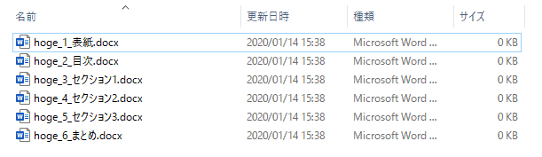

小ネタです。
Wordで作ったドキュメントをPDFに保存して、メールで送信する。ビジネス上、そんなシチュエーションがたまにあるかと思います。私もそうでした。
上司：「ここのフォルダのwordファイルをPDFで保存して、お客さんにメールしといてくれ。」
自分：「はーい。えーとどれどれ・・・」

なんでファイルを分けた？
え、このファイル全部いちいちWordで開いてPDF形式で保存して、しかも1つのPDFファイルに連結するの？しかも、ファイルそれぞれでページ設定とか書式が微妙に違っているから、Wordでファイルを結合するのも面倒だし・・・。
ちなみに、上記のスクリーンショットは実際のファイルではなく、イメージですのでご了承ください。
というわけで、Pythonを使ってWordファイルをPDFに保存しつつ、PDFファイルの結合も一緒に処理しちゃいましょう。
ざっくりこんなところでしょうか。
ちなみに、PDFのページ順を編集するのにはCubePDF Utilityを使っていますが、他のアプリケーションでももちろんOKです。Wordファイルの数にもよりますが、ファイル名でソートした結果がPDFで最終的に出力したいページ順と一致するよう、ファイル名をリネームする方法もあります。
PythonはAnacondaでも問題ありません。なお、実行には下記のライブラリやパッケージが必要です。pipやcondaを利用してインストールしてください。
いきなりですが、結論です。
import sys
import comtypes.client
import glob
import pathlib
import PyPDF2
import time
start = time.time()
wdFormatPDF = 17
def convert(in_file, out_file):
word = comtypes.client.CreateObject('Word.Application')
doc = word.Documents.Open(in_file)
doc.SaveAs(out_file, FileFormat=wdFormatPDF)
doc.Close()
word.Quit()
def pdf_merger(out_pdf, pdfs):
merger = PyPDF2.PdfFileMerger()
for pdf in pdfs:
print(pdf)
merger.append(pdf)
merger.write(out_pdf)
merger.close()
argvs = sys.argv
arg_count = len(argvs)
if arg_count > 1:
file_path = argvs[1]
else:
file_path = 'C:\\app\\work\\docs\\*.docx'
parent_folder = pathlib.Path(file_path).parent
files = glob.glob(file_path)
pdfs = []
for f in files:
file_p = pathlib.Path(f)
file_pdf = f.replace(file_p.suffix, '.pdf')
pdfs.append(file_pdf)
convert(f, file_pdf)
out_file = str(pathlib.Path(parent_folder).joinpath('out.pdf'))
pdf_merger(out_file, pdfs)
process_time = time.time() - start
print(f'Process time is : {process_time}')実行には下記のようにコマンドを発行します。
python docx2pdf.py大したことはしていないのですが、少し補足します。
comtypes.clientを用いてWordをバックグラウンドで実行し、開いたdocxファイルをPDFとして「名前をつけて保存」しています。この際、出力ファイルフォーマットとして「17」という数字を指定して、出力ファイルの形式をPDFとして指定しています。これは、Office VBAのリファレンスで規定されています。
複数のdocxをPDFに変換し終わったら、今度は生成されたPDFの一覧をリストとして取得します。PDFの結合機能はPyPDF2.PdfFileMerger()にappendして、最後に任意のPDFとして出力することで結合が可能です。
元のdocxファイルの数やファイルサイズに依存しますが、割と時間がかかる印象です。まぁ、画面上では別にウィンドウがチラつく、ということはないのでバックグラウンドで動作させていれば、いつの間にか終わります。
自分：「終わりました。メールも出しておきました。」
上司：「おう、お疲れさん。ああ、そうだ。次は、こっちのフォルダのWordファイルを、1つのPDFにしておいてほしいんだけど。」
自分：「」
なお、上記のPythonコードはこちらのリポジトリにあります。